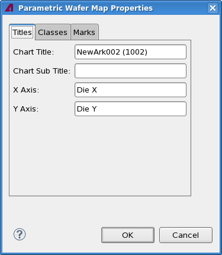
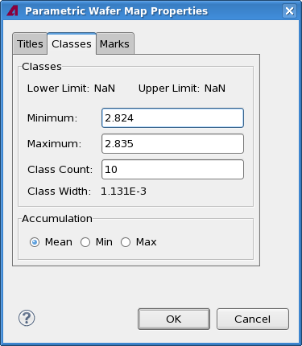
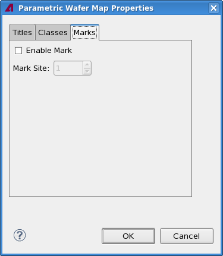

Parametric wafer map properties
The Parametric Wafer Map Properties dialog lets you specify certain aspects of the look of a Parametric wafer map view, including labels, value classes used, and marked sites.
The dialog has three tabs, which are described below.
Titles

The Titles tab contains these elements:
- Chart Title: This field contains the title displayed at the top of
the chart.
By default, this is the test name and the test number in parentheses.
- Chart Subtitle: This field is not used.
- X-Axis: The label for the x-axis.
By default, this is "Die X".
- Y-Axis: The label for the y-axis.
By default, this is "Die Y".
Classes

The Classes tab contains these elements:
- Classes: This section lets you define the value classes into which the dies' test values are
grouped.
The Lower Limit and Upper Limit fields display the limits with which the displayed test has been executed.
- Minimum: The beginning of the range that is to be divided into value classes.
- Maximum: The end of the range.
- Class Count: The number of classes into which the range is
divided.
The Class Width field displays the width of each class (the difference between the lowest and highest values in the class) that results from your settings.
- Accumulation: This section lets you define how the value for each die is calculated:
- Mean: The value for a die is the mean of its test values.
- Min: The value for a die is the minimum of its test values.
- Max: The value for a die is the maximum of its test values.
Marks

The Marks tab contains these elements:
- Enable Mark: If this option is activated, dies that belong to a particular site are marked with a small black triangle in the upper left corner: .
- Mark Site: The number of the site to mark. All dies belonging to the site with the specified number are marked if the Enable Mark option (see above) is active.
Functional changes
- Introduced in SmarTest 7.2.0